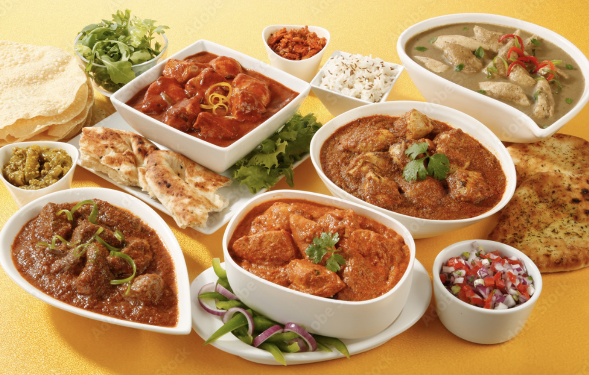

Careers
Join the SunSet Grill family

Current opportunities
We have a spot on our team for a committed, industrious professional like you!
Application in person is encouraged at any of our locations.
About Our positions
We always welcome resumes for cooks, dishwashers, servers, and various support staff. To apply, please contact the restaurant directly. Sunset Grill welcomes applications from people with disabilities. Accommodations are available on request for candidates taking part in all aspects of the selection process.
Servers
Duties
- Make sure to welcome guests and ensure their comfort.
- Learn menu items so you can explain them to visitors in an acceptable way.
- Take food and drink orders.
- Timely food and drink delivery Check in with your visitors to see how things are going.
- Clean up the table's utensils.
- Refill beverages throughout the meal.
- Bills are delivered, and you thank customers for coming to the restaurant.
- Be a team player and collaborate with other servers.
- Set up your waitstaff area.
- Organise the server area.
- closing after your shift on side projects
Hostess/Host
Duties
- Welcome customers and visitors directly.
- Make suitable seating arrangements.
- Display the menus and receive orders.
- Make sure there are enough menu options to serve the number of attendees.
- Establish dining areas.
- Keep your workspace and tables tidy and organised.
- Help the bus drivers and waitresses as needed
Busser
Duties
- Clean tables.
- Deliver dirty flatware, glassware, and dishes to the dishwashing area.
- Mop and sweep floors, as well as clean and polish furniture and counters.
- Food spills should be cleaned up, and floors and counter tops should be spotless.
- Keep an eye out for clients seeking assistance and respond to their questions.
- Make sure the dining area is always pristine.
- Stock serving stations with supplies like ketchup, napkins, and additional sets of cutlery.
- Respond quickly to waiters' and servers' requests to expedite orders by cleaning and organising the kitchen's dishes.
Prep Cook
Duties
- Prepare fruits and vegetables for chopping according to manual instructions.
- Make meat ready for cooking by cutting and slicing it properly.
- Prepare ingredients as instructed.
- Check to make sure the grills, stovetop, steamer, walk-in cooler, and freezers are clean and ready to use.
- Spick-and-span the work surfaces and kitchen countertops.
- Clean your dishes and kitchenware.
- Ensure that everything is stored properly and that all storage locations are clean.
- Always handle food in a safe and hygienic manner.
Line Cook
Duties
- Set up stations and gather all equipment required to start the service.
- Prepare a range of dishes.
- Put the sauces and supplemental garnishes in place.
- Cover, date, and store all food preparation materials properly.
- Inform Owner of Potential Shortages in Advance.
- Serve menu items compliant with established standards.
- Use food preparation tools in accordance with recipe manual.
- Follow the closing checklist for kitchen stations to properly close the kitchen.
- Always keep your work place organised and clean.
- Clean up the workplace throughout the entire shift.
- Check to make sure the grills, stovetop, steamer, walk-in cooler, and freezers are clean and ready to use.
- Ensure that everything is stored properly and that all storage locations are clean.
- Always handle food in a safe and hygienic manner.
Dishwasher
Duties
- Transport dirty dishes to the kitchen by gathering them from dining areas.
- Make sure that dirty dishes are piled neatly so that you can pick them up to wash them.
- To get rid of filth, wash dishes and cutlery with water.
- Dishes should be washed thoroughly, then rinsed.
- Set cleaned cutlery and dishes on drying racks.
- Fill dishwashers with soap and water.
- Put the dishes in the dishwasher in the proper order.
- Take clean dishes out of the dishwasher.
- Place dishes neatly stacked in cabinets.
- Take out the trash and sweep the kitchen floor.
- Make sure the kitchen floor has been thoroughly sanitised.
- Make sure that all of the supplies and equipment for washing dishes are adequately stocked.
- When necessary, help the kitchen staff with the preparation of food.
Our Philosophy
At Sunset Grill, we value spending time with loved ones, taking trips, and most importantly, working hard so we can play hard. It is a philosophy, not merely a job with a pay check every two weeks.
We run one shift in our restaurants, thus we have a very low personnel turnover rate. All of this is possible because we operate a specialised firm that only serves breakfast and lunch, does it incredibly well, and then closes up shop. That's how easy it is.
Sunset Grill can be the ideal place for you if you are devoted, hardworking, and able to handle a fast-paced workplace.